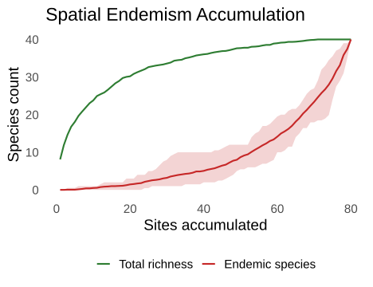
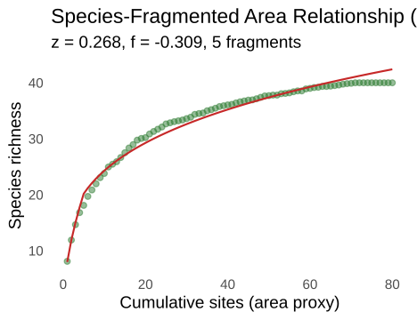
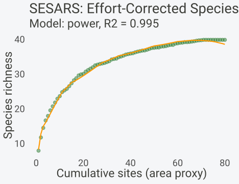
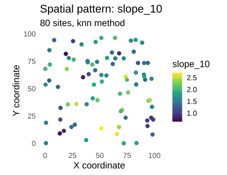
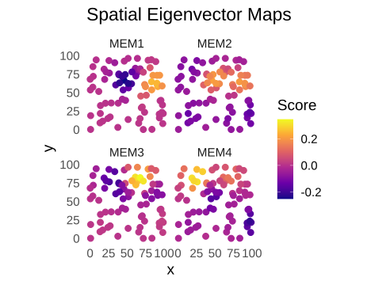
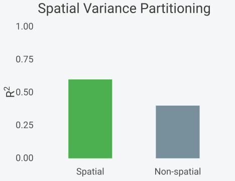
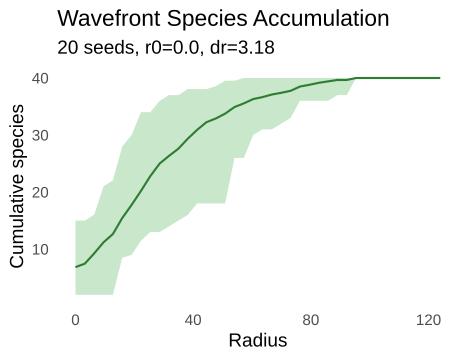
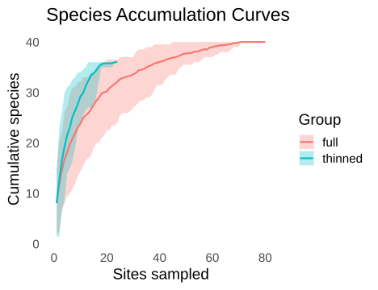

Spatial Analysis: Endemism, Fragmentation, and SAR
Gilles Colling
2026-10-10
Source:vignettes/spatial-analysis.Rmd
spatial-analysis.RmdInstallation
install.packages("spacc") # CRAN
install.packages("pak") # development version
pak::pak("gcol33/spacc")Introduction
Conservation planning rarely asks how many species live in a region. It asks which fragments of that region carry species found nowhere else, how much richness is lost when continuous habitat is broken into patches, and how survey effort distorts the apparent richness of poorly sampled areas. These questions sit beside the standard species accumulation curve, and spacc collects the tools that answer them under one set of objects.
This vignette covers the model family aimed at spatial structure and
conservation value: endemism-area curves, the species-fragmented area
relationship (SFAR), the sampling-effort corrected species-area
relationship (SESARS), per-site accumulation metrics for spatial
prioritisation, Moran eigenvector maps (MEM) for decomposing spatial
autocorrelation, the wavefront expansion diagnostic, and grid-based
spatial subsampling. Each function takes either a site-by-species matrix
with coordinates or a fitted spacc object, and each returns
a typed S3 object with print(), summary(), and
plot() methods.
The worked examples use a single simulated study region with known ground truth. Range size varies across species on purpose: a subset of narrow-ranged endemics share the region with widespread generalists. That contrast drives every result below, from the shape of the endemism curve to the sign of the fragmentation exponent. Working from a simulation with controlled inputs makes it possible to read each output against the structure that produced it, rather than against an unknown truth.
The seven functions divide into three groups by what they consume.
Endemism curves, per-site metrics, and the wavefront diagnostic take the
raw site-by-species matrix and coordinates, and run their own
accumulation internally. SFAR and SESARS take a fitted
spacc object and a covariate (patch labels or effort),
since they reshape an existing curve rather than building a new one. The
MEM tools take coordinates to build a spatial basis, then accept any
per-site response for partitioning. Knowing which group a function
belongs to is the quickest way to see what it needs and what it
returns.
Models and theory
Endemism-area concept
The species-area relationship counts how richness grows with area. The endemism-area relationship asks a sharper question: of the species present in an accumulated set of sites, how many occur only within that set. Let \(S(A)\) be the richness accumulated over area \(A\), and let a species be endemic to the accumulated region when every one of its occurrences falls inside it. At each accumulation step \(k\) over the visit order, a species with cumulative occurrence count \(a_k\) and global occurrence count \(t\) is endemic when \(a_k = t\) and \(a_k > 0\). The endemic count \(E(A)\) rises as narrow-ranged species are captured and approaches total richness only when every site is included, since at full extent every species is trivially contained.
The diagnostic value lies at intermediate area. A site set that holds many endemic species is irreplaceable: those species disappear from the protected network if the set is dropped. Endemism concentrated in small areas signals a setting where reserve placement matters more than reserve size.
The shape of \(E(A)\) carries information beyond its endpoints. A curve that climbs slowly and only catches up to richness near full extent describes a pool of widespread species with diffuse ranges, where almost no area is irreplaceable until nearly everything is included. A curve that tracks richness closely from the start describes a pool of narrow endemics, where even small areas already hold their full complement of locally restricted species. The endemism proportion \(E(A)/S(A)\) makes this readable on a single axis: it is the fraction of the accumulated species pool that is local to the area sampled, and its early behaviour separates landscapes built from widespread species from those built from endemics.
Species-fragmented area relationship (SFAR)
Habitat loss and habitat fragmentation are distinct processes. Removing area reduces richness through the classic power law. Splitting the remaining area into more, smaller pieces reduces it further, through edge effects, isolation, and minimum viable area. The SFAR (Hanski et al. 2013) separates the two with an additive log-linear model,
\[\log(S) = c + z \cdot \log(A) + f \cdot \log(n),\]
where \(S\) is species richness, \(A\) is total habitat area, \(n\) is the number of fragments, \(z\) is the ordinary area exponent of the SAR, \(f\) is the fragmentation exponent, and \(c\) is the intercept on the log scale (so \(e^{c}\) is the richness expected at unit area and a single fragment). A negative \(f\) means that, holding area fixed, more fragments support fewer species. spacc reports \(f\) with the sign convention that a positive value indicates fragmentation reduces richness beyond the area effect, so the model is written \(S = e^{c} \cdot A^{z} \cdot n^{-f}\) in the printed output.
Sampling-effort corrected SAR (SESARS)
Atlas and citizen-science data confound area with effort. A large region that is sparsely surveyed can look species-poor for the wrong reason. SESARS (Dennstadt et al. 2019) adds an effort term to the SAR,
\[\log(S) = c + z \cdot \log(A) + e \cdot \log(E),\]
where \(E\) is sampling effort (visits, hours, trap-nights), \(e\) is the effort exponent, and \(A\), \(z\), \(c\), \(S\) carry their SAR meanings. A positive \(e\) quantifies how much of the apparent richness gradient tracks survey intensity rather than area. With effort in the model, the area exponent \(z\) estimates the area effect net of unequal sampling.
Moran eigenvector maps
Spatial autocorrelation is structure worth describing in its own right. Moran eigenvector maps build an orthogonal basis of spatial patterns directly from coordinates. The construction truncates the pairwise distance matrix at a threshold (by default the largest edge of the minimum spanning tree, the smallest distance that keeps all sites connected), double-centres the squared truncated matrix, and extracts its eigenvectors. Each eigenvector is a map: broad-scale patterns carry large eigenvalues and strong positive Moran’s I, fine-scale patterns carry small eigenvalues. Moran’s I for eigenvector \(v\) with connectivity matrix \(W\) is
\[I = \frac{n}{\sum_{ij} w_{ij}} \frac{\sum_{ij} w_{ij}\,(v_i - \bar v)(v_j - \bar v)} {\sum_i (v_i - \bar v)^2},\]
with \(n\) sites and weights \(w_{ij} = 1\) when sites \(i\) and \(j\) lie within the threshold. Regressing a per-site response on a selected set of these eigenvectors partitions its variance into a spatial component and a residual, and reveals at which scales the structure lives.
Two methods share the construction. PCNM retains every eigenvector with a positive eigenvalue, including those describing negative autocorrelation (checkerboard-like patterns where neighbours differ). dbMEM keeps only the eigenvectors with positive Moran’s I, the patterns where neighbours resemble each other, which is the usual target for modelling ecological gradients. The threshold matters as much as the method: a small threshold connects only the nearest sites and yields many fine-scale vectors, while a large threshold connects distant sites and emphasises broad gradients. The minimum-spanning-tree default is the smallest threshold that leaves no site isolated, a principled starting point that adapts to irregular sampling.
Simulating range-size variation
The simulated region holds 80 sites scattered over a 100 by 100 unit
square and 40 species. Each species occupies a Gaussian neighbourhood
around a random centre, so occurrence probability falls off with squared
distance from that centre. The decay constant spread sets
range size: a large value confines a species to a tight cluster near its
centre, a small value lets it spill across the whole extent.
library(spacc)
set.seed(42)
n_sites <- 80
n_species <- 40
coords <- data.frame(
x = runif(n_sites, 0, 100),
y = runif(n_sites, 0, 100)
)
# Species with varying range sizes (some endemic, some widespread)
species <- matrix(0L, n_sites, n_species)
for (sp in seq_len(n_species)) {
cx <- runif(1, 10, 90)
cy <- runif(1, 10, 90)
# First 10 species are narrow-ranged (endemics)
spread <- if (sp <= 10) 0.005 else 0.001
prob <- exp(-spread * ((coords$x - cx)^2 + (coords$y - cy)^2))
species[, sp] <- rbinom(n_sites, 1, prob)
}
colnames(species) <- paste0("sp", seq_len(n_species))The first 10 species use spread = 0.005, which gives a
Gaussian half-width of roughly 12 units, about an eighth of the map
edge. These are the endemics: tight clusters that vanish if their corner
of the map is dropped. The remaining 30 use spread = 0.001,
a half-width near 26 units, so they appear across much of the area. The
split is the ground truth that every downstream analysis recovers.
range_size <- colSums(species)
tapply(range_size, c(rep("endemic", 10), rep("widespread", 30)), mean)
#> endemic widespread
#> 4.50000 18.46667Mean occupancy is lower for the narrow-ranged group, as designed. The contrast is moderate rather than extreme, which keeps the simulated curves realistic: endemics are not single-site rarities, and widespread species do not saturate every site.
Endemism-area curves
spaccEndemism() tracks endemic richness as the sampled
area expands. It runs a nearest-neighbour accumulation from each of
n_seeds random starts, and at each step counts species
whose every occurrence falls inside the accumulated sites. The print
method reports the final mean endemism, which equals total richness once
all sites are in.
end <- spaccEndemism(species, coords, n_seeds = 20, progress = FALSE, seed = 1)
end
#> spacc endemism: 80 sites, 40 species, 20 seeds
#> Final mean endemism: 40.0 species (100% of total)The summary() method returns the curve as a data frame,
with mean richness, mean endemism, a percentile confidence band, and the
endemism proportion at each accumulated extent. The proportion is the
share of accumulated species that are local to the area sampled so
far.
es <- summary(end)
head(es[, c("sites", "mean_richness", "mean_endemism", "endemism_proportion")], 4)
#> sites mean_richness mean_endemism endemism_proportion
#> 1 1 8.10 0.00 0.000000000
#> 2 2 11.90 0.00 0.000000000
#> 3 3 14.65 0.05 0.003412969
#> 4 4 16.80 0.05 0.002976190
plot(end) + transparent
Total richness and endemic richness as area expands.
At small extents the endemism proportion is high: most species seen so far are confined to the few sites visited, because a handful of sites can only contain narrow-ranged occupants. As more sites enter, widespread species accumulate and the proportion falls, then both curves converge as the remaining endemics are absorbed. The early peak in proportion marks the spatial scale at which irreplaceability is concentrated. Sites contributing to that peak are the ones a reserve network cannot afford to lose, because the species they hold occur nowhere else in the dataset.
Setting map = TRUE runs the accumulation from every site
and records the endemic count reachable from each starting point, which
feeds the map plot and the as_sf() export covered alongside
the per-site metrics below.
Species-fragmented area relationship (SFAR)
SFAR needs two inputs: a fitted spacc object and a
vector assigning each site to a habitat fragment. Patches here come from
k-means clustering of the coordinates, a stand-in for mapped habitat
patches. kmeans() is base R, so no guard is required.
sac <- spacc(species, coords, n_seeds = 20, progress = FALSE, seed = 1)
set.seed(123)
patches <- kmeans(coords, centers = 5)$cluster
sfar_fit <- sfar(sac, patches)
sfar_fit
#> SFAR: Species-Fragmented Area Relationship
#> --------------------------------------------
#> Fragments: 5
#> R-squared: 0.988
#>
#> Model: S = 7.98 * A^0.268 * n^(--0.309)
#> Fragmentation effect (f): -0.309
#> No additional fragmentation penalty detectedThe fitted coefficients are stored in $coef as a named
vector: log_c is the log-scale intercept, z
the area exponent, and f the fragmentation exponent with
the sign convention that positive means fragmentation costs
richness.
round(sfar_fit$coef, 3)
#> log_c z f
#> 2.076 0.268 -0.309
plot(sfar_fit) + transparent
SFAR fit: observed richness and the area-plus-fragmentation prediction.
The area exponent \(z\) takes a value in the usual SAR range, confirming that richness climbs with the number of accumulated sites. The fragmentation exponent \(f\) measures the residual penalty once area is accounted for. A negative printed \(f\) (reported as “no additional fragmentation penalty”) means the patch count adds nothing beyond area in this dataset, which is the expected result for a simulation where patches are an arbitrary partition of a continuous surface rather than isolated habitat islands. In a genuinely fragmented region, where each patch loses edge-sensitive and area-demanding species, \(f\) turns positive and the SFAR line falls below the pure-area expectation. The interpretation hinges on that gap: SFAR is read as the distance between the fitted curve and what area alone would predict.
The mechanism behind a positive \(f\) is the reason the term is added at all. Theory predicts that fragmentation matters most when total habitat is already low, because at that point the remaining area is divided into pieces too small to sustain populations that need large territories or interior conditions away from edges. A single block of a given area then holds more species than the same area split into many fragments. The SFAR captures this as a multiplicative penalty \(n^{-f}\) that grows with fragment count, so doubling the number of fragments at fixed area reduces predicted richness by a factor \(2^{-f}\). Estimating \(f\) therefore requires patches that are genuinely isolated and that vary in number across the dataset, conditions the practical guidance below makes explicit.
Sampling-effort corrected SAR (SESARS)
SESARS corrects the SAR for uneven survey intensity. Effort enters as a per-site vector with one entry per site. Here effort is drawn from a Poisson distribution, mimicking a survey where some sites received many visits and others few.
set.seed(7)
effort <- rpois(n_sites, 10) + 1
sesars_fit <- sesars(sac, effort)
sesars_fit
#> SESARS: Sampling Effort Species-Area Relationship
#> ------------------------------------------------
#> Model: power
#> R-squared: 0.995
#>
#> Coefficients:
#> log_c z w
#> 5.2309 2.3476 -1.7298
#>
#> Interpretation: S = 186.97 * A^2.348 * E^-1.730The coefficients live in $coef: log_c (or
c under the additive model), the area exponent
z, and the effort exponent (named w in the
object, the \(e\) of the equation
above). The R-squared in $r_squared reports how much of the
richness variation the joint area-and-effort model captures.
round(sesars_fit$coef, 3)
#> log_c z w
#> 5.231 2.348 -1.730
sesars_fit$r_squared
#> [1] 0.9954067
plot(sesars_fit) + transparent
SESARS fit with the area-plus-effort prediction overlaid on observed richness.
A positive effort exponent means apparent richness rises with survey intensity independent of area, the bias SESARS exists to expose. When effort and area are correlated in field data, ignoring effort inflates the area exponent, because the SAR absorbs the effort signal into \(z\). Fitting both terms returns an area exponent net of effort, which is the quantity comparable across regions surveyed at different intensities.
The effort enters as a cumulative quantity aligned with the accumulation order, so the model relates accumulated richness to accumulated area and accumulated effort step by step. In this simulation effort is independent of the species data, so its exponent reflects only the Poisson draw rather than a real survey-intensity gradient. The instructive case is the field dataset where under-surveyed regions are also species-poor in the raw counts: there the naive SAR reads the low richness of sparsely visited sites as an area effect, and only the effort term separates true poverty from missing detections. SESARS is most useful precisely when effort and richness move together, since that is the configuration in which the uncorrected SAR is most misleading.
Per-site metrics for spatial prioritisation
spaccMetrics() runs an accumulation curve starting from
each site and reduces each curve to summary statistics, giving one row
per site. Three metrics are requested here: slope_10 (the
initial slope over the first 10 percent of sites),
half_richness (the number of sites needed to reach half the
total species pool), and auc (the area under the
accumulation curve, normalised by length).
met <- spaccMetrics(species, coords,
metrics = c("slope_10", "half_richness", "auc"),
progress = FALSE)
summary(met)
#> Metric summary:
#> slope_10: mean=1.63, sd=0.47, range=[0.64, 2.70]
#> half_richness: mean=9.21, sd=4.35, range=[2.00, 19.00]
#> auc: mean=32.68, sd=2.12, range=[29.10, 36.59]The per-site values are stored in met$metrics, a data
frame carrying the coordinates and a column for each metric, which makes
it directly mappable and joinable.
head(met$metrics[, c("site_id", "x", "y", "slope_10", "half_richness", "auc")], 4)
#> site_id x y slope_10 half_richness auc
#> 1 1 91.48060 58.16040 1.321429 10 33.1875
#> 2 2 93.70754 15.79052 1.011905 9 33.5625
#> 3 3 28.61395 35.90283 2.511905 4 34.6125
#> 4 4 83.04476 64.56319 1.678571 7 32.5375
plot(met, metric = "slope_10", type = "heatmap") + transparent
Spatial heatmap of the initial accumulation slope per site.
A steep initial slope marks a site whose neighbourhood adds species
fast: many distinct species are packed nearby, the spatial signature of
a diversity hotspot. A low half_richness flags a site from
which half the species pool is reachable within a short accumulation,
another hotspot indicator. Reading the heatmap, the clusters of high
slope coincide with the corners where endemics were seeded, since those
tight ranges concentrate species turnover. These maps turn an abstract
curve into a spatial prioritisation layer: rank sites by slope or
inverse half-richness and the top entries are candidate priority
areas.
The three metrics capture different stages of the curve and need not agree. The slope reads the steepness at the origin, sensitive to immediate neighbours. Half-richness reads the middle, where the curve crosses the halfway mark and turnover slows. The AUC integrates the whole curve and rewards sites that accumulate quickly and reach a high plateau. A site can have a steep slope but a high half-richness if its rich neighbourhood is small and the curve then stalls. Comparing the maps of the three metrics shows whether the hotspots are local peaks or extended rich zones, a distinction that matters when a reserve must enclose a contiguous area rather than a single point.
The metrics object exports to sf for use in a GIS workflow or for spatial joins against habitat layers. The conversion is guarded because sf is a Suggests dependency.
Moran eigenvector maps and spatial partitioning
spatialEigenvectors() builds the MEM basis from
coordinates alone. The print method reports the truncation threshold,
the number of eigenvectors retained, and the range of Moran’s I across
them.
mem <- spatialEigenvectors(coords)
mem
#> Spatial eigenvectors (PCNM): 80 sites
#> Threshold: 17.5122
#> Eigenvectors retained: 50
#> Moran's I range: [-0.168, 1.419]The summary() method tabulates each eigenvector’s
eigenvalue, Moran’s I, and share of total variance. The leading vectors
carry the broad-scale, strongly autocorrelated patterns; later vectors
describe progressively finer structure.
head(summary(mem), 5)
#> vector eigenvalue moran_i variance_explained
#> 1 MEM1 22573.08 1.4189143 0.09330907
#> 2 MEM2 18796.70 1.1530522 0.07769883
#> 3 MEM3 16042.37 0.9561648 0.06631344
#> 4 MEM4 14292.83 0.8373798 0.05908148
#> 5 MEM5 13568.98 0.7816404 0.05608932
plot(mem, type = "map", n_vectors = 4) + transparent
First spatial eigenvectors mapped over the landscape.
Mapping the first few eigenvectors shows the scales explicitly: MEM1
splits the region into broad halves, later vectors carve it into finer
tiles. To learn how much of a diversity pattern is spatially structured,
spatialPartition() regresses a per-site response on the
MEMs with forward selection, then reports the spatial and non-spatial
shares of variance. The response here is the per-site initial slope from
the metrics object.
slope <- met$metrics$slope_10
part <- spatialPartition(slope, mem)
part
#> Spatial Variance Partitioning
#> -----------------------------------
#> Spatial R-squared: 0.600
#> Non-spatial: 0.400
#> MEMs selected: 9
#> Selected: MEM6, MEM20, MEM7, MEM13, MEM15, MEM14, MEM24, MEM5, MEM11
plot(part) + transparent
Variance in per-site slope split into spatial and non-spatial components.
The spatial R-squared is the fraction of slope variation explained by the selected eigenvectors, and the selected MEMs name the scales that carry it. A large spatial share with mostly low-numbered MEMs means the hotspots are organised at broad scales; a share spread across high-numbered MEMs means the structure is patchy and fine-grained. Partitioning this way separates the question “is the pattern spatial” from “is the pattern explained by a covariate”, and the two analyses can be combined to ask how much spatial structure survives after accounting for an environmental predictor.
Forward selection guards against overfitting. It adds eigenvectors
one at a time, keeping each only when it improves the model fit by
enough to justify the extra parameter, and stops when no remaining
vector helps. The result is a parsimonious set rather than the full
basis, so the reported spatial R-squared reflects structure the data
actually support. Passing forward = FALSE includes every
eigenvector and inflates the fit, which is appropriate only when the
goal is to remove all spatial signal rather than to describe it. The
selected MEMs are worth inspecting individually: their maps name the
spatial scales at which the response is organised, turning a single
R-squared into a scale-resolved account of where the pattern lives.
Wavefront expansion
spaccWavefront() accumulates species inside an expanding
radius from seed points, a model of spread from an introduction front.
As a diagnostic it answers a different question than the
nearest-neighbour curve: how richness grows with geographic reach rather
than with site count, which exposes how clumped the species pool is
around typical starting points. The method originates in invasion
biology, where it describes the species an organism encounters as its
range front sweeps outward, but it serves equally as a spatial
diagnostic for any dataset where distance from a point is the relevant
axis.
wf <- spaccWavefront(species, coords, n_seeds = 20, n_steps = 40,
progress = FALSE, seed = 1)
wf
#> spacc wavefront: 80 sites, 40 species, 20 seeds
#> Radius: 0.00 to 124.00 (40 steps)
plot(wf) + transparent
Species captured against expanding radius from seed points.
The curve rises steeply at small radii when seeds land in
species-dense neighbourhoods, then flattens as the front reaches sparse
ground. Plotting against xaxis = "sites" instead recovers a
site-based accumulation, so the two axes give the geographic and the
sampling view of the same expansion. A front that saturates early
relative to its maximum radius indicates a pool concentrated near the
seeds, the spatial signature the endemism curve also detects.
The radius step dr defaults to the maximum pairwise
distance divided by n_steps, so the front sweeps the whole
region in the requested number of increments. The contrast between the
radius axis and the site axis is the diagnostic content. A curve that
climbs fast on the radius axis but slow on the site axis means each unit
of distance brings in many sites, the signature of a dense, evenly
covered network. The opposite pattern, slow on radius and fast on sites,
marks a network with large gaps the front must cross before reaching the
next cluster. Read this way, the wavefront measures how the spatial
layout of the sampling, not just the species, shapes the pace of
discovery.
Spatial subsampling
Sites clustered in space inflate the apparent accumulation rate and
bias macroecological fits, because nearby sites share species.
subsample() thins the network to reduce that
autocorrelation. Grid thinning overlays a mesh of a chosen cell size and
keeps one random site per occupied cell.
keep <- subsample(coords, method = "grid", cell_size = 20, seed = 1)
length(keep)
#> [1] 24
sac_full <- spacc(species, coords, n_seeds = 20, progress = FALSE, seed = 1)
sac_thin <- spacc(species[keep, ], coords[keep, ], n_seeds = 20,
progress = FALSE, seed = 1)
combined <- c(full = sac_full, thinned = sac_thin)
plot(combined) + transparent
Accumulation curve before and after grid thinning.
The thinned curve sits above the full curve at equal site counts: with redundant near-neighbours removed, each retained site adds more new species, so the per-site accumulation rate climbs. The two curves converge at their right ends toward total richness, since thinning drops sites, not species. For SAR and SFAR fits, the thinned set gives a less biased area exponent because it breaks the spatial redundancy that otherwise flattens the curve. Thinning gives up sample size to gain independence, and the cell size sets the balance directly.
Grid thinning is one of three methods the function offers. Random
subsampling takes a simple sample of a target size and ignores
geography, useful only for matching sample sizes across datasets.
Distance thinning removes sites greedily until no two retained points
fall closer than min_dist, dropping the member of each
close pair that has more near neighbours, which gives finer control than
a grid when the sampling is clustered irregularly. The grid method is
the fastest and the most predictable: one site per occupied cell, with
the cell size read directly off the autocorrelation scale. Whichever
method is chosen, the return value is a vector of row indices, so the
same indices subset both the species matrix and the coordinates and keep
them aligned by position.
Practical guidance
The spatial model family rewards attention to sample size and to whether the question matches the method. The rules below use the conventions of this package and the cited literature.
Rules of thumb.
- SFAR needs at least 4 fragments to estimate \(f\) separately from \(z\), and closer to 8 to 10 for a stable exponent. With fewer patches the fragmentation term and the area term are nearly collinear, and the split between them is unidentifiable.
- SESARS needs effort to span at least one order of magnitude (a 10-fold range from least to most surveyed site). When effort is near-constant, \(\log(E)\) has no variance to fit and the effort exponent collapses toward zero with a wide standard error.
- For MEM, retain on the order of \(n/2\) candidate eigenvectors at most for a network of \(n\) sites, and let forward selection prune from there. Selecting more than half the eigenvectors risks fitting noise, since each MEM consumes a degree of freedom.
- Endemism curves stabilise around 30 to 50 sites; below 20 sites the early endemism proportion is dominated by sampling order and the percentile band is too wide to read.
- For grid subsampling, set
cell_sizenear the spatial scale of autocorrelation. A cell smaller than the nearest-neighbour spacing keeps nearly every site and removes no redundancy; a cell several times the spacing discards most of the data.
Minimum sample sizes.
| Method | Minimum input | Comfortable input |
|---|---|---|
| Endemism curve | 20 sites | 40 or more sites |
| SFAR | 4 fragments | 8 to 10 fragments |
| SESARS | effort spanning 10x | effort spanning 30x+ |
| MEM partition | 20 sites | 50 or more sites |
| Per-site metrics | 30 sites | 50 or more sites |
| Wavefront | 30 sites | 50 or more sites |
Choosing a method.
| Question | Method |
|---|---|
| Which sites hold species found nowhere else | spaccEndemism |
| Does fragmentation cost richness beyond area | sfar |
| Is richness biased by uneven survey effort | sesars |
| Where are the accumulation hotspots | spaccMetrics |
| At what scale is the diversity pattern organised | spatialEigenvectors + spatialPartition |
| How does richness grow with geographic reach | spaccWavefront |
| How to break spatial autocorrelation | subsample |
When not to use each.
- Do not fit SFAR when patches are an arbitrary partition of continuous habitat, as the k-means patches here are. SFAR assumes fragments are real, isolated habitat units; on a continuous surface \(f\) carries no biological meaning and the example above returns no penalty for exactly this reason.
- Do not use SESARS when effort is essentially uniform across sites. The model reduces to an ordinary SAR with an extra unidentified parameter, and the effort exponent will be noise.
- Do not read endemism proportions from fewer than 20 sites. With a short visit order the early steps are dominated by which site happened to be visited first, not by genuine spatial restriction.
- Do not feed MEM more eigenvectors than roughly half the site count. The basis then has enough degrees of freedom to fit any per-site response, and the spatial R-squared loses meaning.
References
- Hanski, I., Zurita, G.A., Bellocq, M.I. & Rybicki, J. (2013). Species-fragmented area relationship. Proceedings of the National Academy of Sciences, 110, 12715-12720.
- Rybicki, J. & Hanski, I. (2013). Species-area relationships and extinctions caused by habitat loss and fragmentation. Ecology Letters, 16, 27-38.
- Dennstadt, F., Horak, J. & Martin, M.D. (2019). Predictive sampling effort and species-area relationship models for estimating richness in fragmented landscapes. Diversity and Distributions, 26, 1112-1123.
- Borcard, D. & Legendre, P. (2002). All-scale spatial analysis of ecological data by means of principal coordinates of neighbour matrices. Ecological Modelling, 153, 51-68.
- Dray, S., Legendre, P. & Peres-Neto, P.R. (2006). Spatial modelling: a comprehensive framework for principal coordinate analysis of neighbour matrices (PCNM). Ecological Modelling, 196, 483-493.
- Kier, G., Kreft, H., Lee, T.M., et al. (2009). A global assessment of endemism and species richness across island and mainland regions. Proceedings of the National Academy of Sciences, 106, 9322-9327.
- Aiello-Lammens, M.E., Boria, R.A., Radosavljevic, A., et al. (2015). spThin: an R package for spatial thinning. Ecography, 38, 541-545.